1 Neural Networks
1.1 Preprocessing
Any preprocessing stats must only be computed on the training data, and then applied to the validation/test data. First split in train/val/test and then apply stats on the train data, to later apply to val and test.
1.1.1 Normalization
- mean normalization, mean substraction (0 mean)
- scaling (-1 , 1) (0, 1)
make all dimensions around the same scale In images, the range is equal for all pixels (0 to 255), so not extrictly necessary.
- divide by its standard deviation once its been zero-centered. or
- normalize each dimension so that the min and max is -1 and 1.
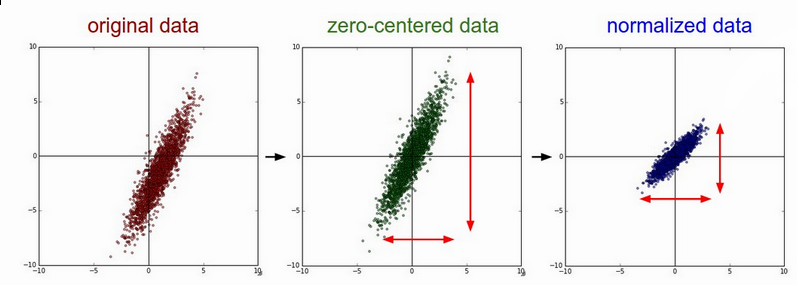
1.1.2 one-hot encoding
- remember to check if is necessary to remove one column when hot-encoding
1.1.3 PCA
first, center the data. reduce dimensionality of data, discarding dimensions along which the data has no variance
1.1.4 whitening
if input is multivariate gaussian, then the whitened data will be a gaussian with zero mean and identity covariance matrix. 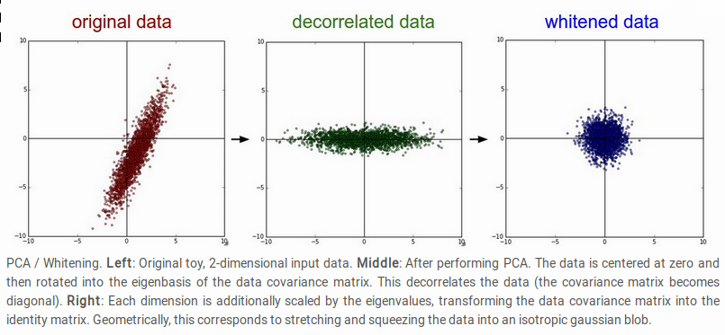
1.2 Base
1.2.1 bias and weights
Weights control the strength of influence of one neuron on another.
1.2.2 backpropagation
Way of computing gradients through recursive application of chain rule
1.2.3 gradient descent
1.2.4 perceptron
1.2.5 sigmoid neurons
1.2.6 activation function
Represent non linearities. Firing rate of neurons.
1.2.8 batch size
1.2.9 num epochs
1.2.10 mini-batch gradient descent
cuz its wasteful to compute the full loss over the entire training set in order to perform a single param update. Instead train on batches, (256 samples), each batch is used to perform a param update. Faster convergence. Size of the mini-batch is a hyperparameter. In practice uses power of 2 cuz many vectorized ops work faster that way. Not usually cross-validated.
1.3 Optimizers
1.3.1 GradientDescentOptimizer
Adam is currently recommended as the default algorithm to use, and often works slightly better than RMSProp. However, it is often also worth trying SGD+Nesterov Momentum as alternative.
1.3.2 DONE Momentum
Enjoys better convergence rates on deep networks. Almost always.
- Loss is interpreted as the height (or Potential energy U)of a hilly terrain. The optimization is like simulating the parameter vector (i.e. a particle) as rolling on the landscape.
- The Force on the particle F = - ∇ U. The force is the negative gradient of the loss function. F=ma so the gradient is proportional to the acceleration of the particle. This physics view suggests an update in which the gradient directly influences the veloctiy, which in turn has an effect on the position:
- v = mu * v - learningreate * dx #integrate velocity
- x += v # integrate position
- v is initialized at zero.
- mu (typical value 0.9). Called momentum, but is more like friction. Damps the velocity and reduces kinetic energy, or else the particle wouldnt stop at the bottom.
- Cross-validation: values such as [0.5, 0.9, 0.95, 0.99].
- Optimization can benefit from momentum schedules, increasing momentum. (Ex: start with 0.5 and anneal it to 0.99)
1.3.3 Nesterov Momentum
Slightly better than standard momentum.
- When param vector is at x, we know that momentum term alone moves the param vector by mu*v.
1.3.4 Per-parameter adaptive learning rate methods
Each param has different learning rate.
- TODO AdaGRAD
Adaptive learning rate.
- cache += dx**2 #Gradient dx and parameter vector x
- x += - learningrate * dx / (np.sqrt(cache) + eps)
- cache is used to normalize the param update step, element-wise.
- Weights receiving high gradients will have their effective lr reduced, whicle weights with small or infrequent updates will have their effective lr increased. eps prevents division by zero.
- Downside: With deep learning, the monotonic lr usually proves too aggressive and stops learning too early.
- RMSprop.
Adjust Adagrad to reduce its aggresive, monotonically decreasing learning rate. Uses a moving average of squared gradients.
- cache = decayrate * cache + ( 1 - decayrate) * dx**2
- x += - learningrate * dx / (np.sqrt(cache) + eps)
- decayrate = [0.9, 0.99, 0.999].
- cache var is "leaky". RMSProp still modulates the lr of each weight based on the magnitudes of its gradients, but unlike Adagrad the updates do not get monotonically smaller.
- Adam
Like RMSProp with momentum. The "smooth" version of the gradient m is used instead of the raw (and perhaps) noisy gradient vector dx.
1.3.5 TODO random search
try many different random weights and keep track of the one that works best.
1.3.6 TODO random local search
extend one foot in a random direction and then take a step only if it leads downhill
1.4 Activation Functions
1.4.1 linear: No activation function
1.4.2 Sigmoid
Takes a real value and squashes it in the range between 0-1 sigma = 1/1+e(-x) Historical, now is rarely ever used, cuz of two major drawbacks:
- Saturate and kill gradients. When the neuron saturates at either 0 or 1, the gradient is almost zero. Which makes the training very slow. Needs to pay extra attention to weight initialization, cuz it can saturate the neurons.
- sigmoid outputs are not zero-centered. So following layers would receive data not zero-centered. During grad descent, makes weights become all positive or negative. Can introduce undesirable zig-zagging in the weights updates. This problem is less severe than the saturation above.
1.4.3 tanh
Squashes values to the range [-1, 1]. Its activations saturate, but the output is zero-centered. Always preferred over sigmoids.
1.4.4 ReLU
- f(x) = max(0, x)
- greatly accelerates the convergence of sgd compared to tanh/sigmoid.
- involves unexpensive operations compared to the tanh/sigmoid.
- Can "die" during training. A large gradient flowing through a ReLU could cause the weights to update in such a way that the neuron will never activate on any datapoint again. So the gradient through the unit will forever be zero. Ex: 40% of your network can be "dead" if the learning rate is set too high. With proper setting this is less frequently an issue.
1.4.5 leaky RELU
attempt to fix the "dying ReLU". Instead of the f being zero when x < 0, it will instead have a small negative slope. Some success with this function, but the results are not always consistent.
1.4.6 Maxout
Doesnt have the functional form f(wx + b). A non-linearity is applied on the dot product between w and x. Computes max(w1x + b1, w2x + b2). ReLU and Leaky ReLU are special cases of this form. Has all the benefits of a ReLU and does not have its drawbacks. However, it doubles the number of params for every single neuron.
1.4.7 TODO softmax: probabilities
- Takes vector of real-valued values and transforms it into a probability distribution
- prone to numeric inestability when computing. needs normalization trick
- the "probabilities" depend on the value of the regularization strengh λ
- has a nice simple derivative
- temperature?
1.5 Loss Functions, Cost Functions, Objective Functions
1.5.1 mse: for regression
L2 squared norm, L1 norm of difference. L2 is better. L2 is much harder to optimize than softmax.
- requires that the network outputs exactly one correct value for each input, whereas in softmax, it only matters that their output magnitudes are appropriate.
- L2 is less robust cuz outliers cause huge gradients.
- Consider binning.
- Applying dropout (especially in the layer right before L2 loss) is not a great idea.
1.5.2 cross-entropy: mostly for classification
- Avoid the slow learning when the predicted value is very different than the real value. Because of the derivative of the function.
- the right cost function to use with softmax
- has a very big gradient when the target value is 1 and the output is almost zero. Very steep derivative when the answer is very wrong
- For large number of classes: Hierarchical Softmax. Decomposes labels into tree. Each label is a path along he tree, and softmax is trained at every node of the tree to disambiguate between branches.
1.5.3 Attribute classification
when there isnt a single correct answer. Build a binary classifier for every attribute independently. Or train a logistic regression classifier for every attr independently.
1.6 Types of Networks
1.6.1 Fully-Connected, Dense
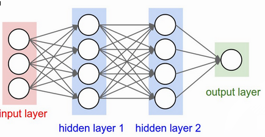 In practice, it is often the case that 3-layer neural networks will outperform 2-layer nets, but going even deeper rarely helps much more. This is in contrast to Conv Nets, where depth has been found to be an extremely important component for a good recognition system.
1.6.2 Convolutional nets
Assumption that inputs are images, so allows us to encode certain properties into the architecture. Neurons arraged in width, height, depth The neurons in a layer are only connected to small region of the layer before it. 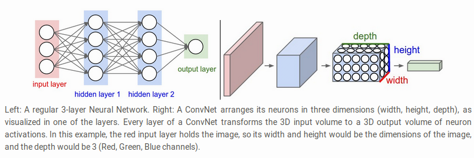
- Convolution layer
Typical filter (5x5x3). We have entire set of filters in each CONV layer (e.g. filters), and each will produce a separate 2-dimensional activation map. We will stack these maps along the depth dim and produce the output volume. The network learns filters that activaate when they see some visual feature such as edges.
- strides
the number of pixels we slide the filter
- depth
number of filters to use.
- window size
- padding
- zero padding: pad the input volume with zeros around the border. Allows control the spatial size of the output volumes.
- is common to set zero-padding looking to have and output volume of same size as input volume.
- spatial size of the output volume
how many neurons "fit" (W - F + 2P)/S+1. W=input volume size, F=field size, S=Stride, P=zero padding
- shared weights
if one feature is useful to compute at some spatial position (x,y), then it should also be useful to compute at a different pos (x2,y2). So we make each depth slice to use the same weights and bias. if all neurons in a single depth slice are using the same weight vector, then the forward pass can be computed as a convolution of the weights with the input volume. Doesnt make sense when the input images to a convnet have some specific centered structurs¡e, where we should expect that completely diff features should be learned on one side of the image than another.
- advantage local fields
We will connect each neuron to only a local region of the input volume. Receptive field. The connections are local in space(along width and height), but always full along the entire depth.
- less number of weights
- TODO 1x1 convolution
- dilation
filters that have spaces between each cell, called dilation. Useful in conjunction with 0-dilated filters cuz it allows you to merge spatial info across the inputs much more agressively with fewer layers. For example, if you stack two 3x3 CONV layers on top of each other then you can convince yourself that the neurons on the 2nd layer are a function of a 5x5 patch of the input. If we use dilated convolutions then this effective receptive field would grow much quicker.
- strides
- Pooling layer
Reduce spatial size to reduce amount of params and computation, and hence control overfitting. The most commoon is a maxpooling of size 2x2 applied with stride of 2. The depth dimension remains unchanged. Other common F = 3, S = 2 (overlapping pooling). Larger receptive fields are too destructive.

- MaxPooling
- strides
- window size
- General Pooling
average pooling, l2-norm pooling. Max pooling works better in practice
- Getting rid of pooling
discard pooling in favor of repeated CONV layers. Suggest using larger stride in CONV layer once in a while. Important for training good generative models. (VAEs), (GANs)
- MaxPooling
- Fully-Connected layer
- ConvNet Architectures
- Layer Patterns
most common: stack a few CONV-RELU layers, follows then with POOL layers, and repeat this until the image has been merged spatially to a small size. At some point, transition to fully-connected layers. The last fc layer holds the output. INPUT -> [[CONV -> RELU]*N -> POOL?]*M -> [FC -> RELU]*K -> FC N >= 0 (usually N <= 3), M >= 0, K >= 0 (usually K<3). Multiple stack CONV layers are good for larger and deeper networks, because they can develop more complex features of the input volume before the destructive pooling operation.
- Prefer a stack of small filter CONV to one large receptive field CONV layer. For larger receptive fields the neurons would be computing a linear function over the input, while the stacks of CONV layers contain non-linearities that make their features more expressive, and with fewer parameters. The disadvantage is the need of more memory to hold all intermediate CONV layer results if we plan to do backpropagation.
- The conventional paradigm of a linear list of layers has recently been challenged: Google Inception and Residual Networks.
- Use whatever works best on ImageNet: Look at whatever architecture currently works best on ImageNet, download a pretrained model and finetune it on your data. You should rarely every have to train a ConvNet from scratch or design one from scratch.
- Layer Sizing Patterns
This scheme is pleasing and reduces sizing headaches.
- input layer should be divisible by 2 many times (32,64,96,224,384,512)
- conv layers small filters (3x3 at most 5x5). stride = 1 and padding with zeros trying not to alter the spatial dimensions.
- pool layers: maxpooling with 2x2 and stride=2. This discards 75% of activations. Or 3x3 with stride 2, less common.
- why stride of 1 in CONV? Smaller works better in practice, and leaves the spatial down sampling to pooling, while conv layers only transform the input volume depth-wise.
- why padding? keep spatial size constant, and improves performance. Else, information at the borders would be "washed away" too quickly.
- Compromising based on memory constraints. The amount of memory can build up very quickly with the rules presented above. In practice, people prefer to make the compromise at only the first CONV layer. Like using a first CONV layer with filter sizes of 7x7 and stride of 2. AlexNet uses 11x11 and stride of 4.
- Layer Patterns
- TODO Inception
1.6.3 TODO Deconvolutional networks
1.6.4 TODO Recurrent nets
1.6.5 Autoencoders
NN capable of unsupervised feature learning autoencoders
1.6.6 TODO Boltzmann machines
1.6.7 TODO Symmetrically connected networks. Hopfield nets.
like recurrent nets, but the connections between units are symmetrical (same weight in both directions) Without hidden units: hopfield nets, with: Boltzmann machines
1.6.8 NLP
1.6.9 TODO Generative Adversarial Networks (GANs)
1.7 TODO Improvements, Regularization
if you train a small network the final loss can display a good amount of variance - in some cases you get lucky and converge to a good place but in some cases you get trapped in one of the bad minima. On the other hand, if you train a large network you’ll start to find many different solutions, but the variance in the final achieved loss will be much smaller. In other words, all solutions are about equally as good, and rely less on the luck of random initialization. To reiterate, the regularization strength is the preferred way to control the overfitting of a neural network. The takeaway is that you should not be using smaller networks because you are afraid of overfitting. Instead, you should use as big of a neural network as your computational budget allows, and use other regularization techniques to control overfitting.
1.7.1 L2 and L1
L2 is much more unforgiving than L1 when it comes to differences between vectors. L2 prefers many medium disagreements than a big one
- bias is not necessary to regularize, they do not control the strength of influence of an input dimension.
- L2 can be expected to give superior performance over L1.
1.7.2 Max norm constraints.
- enforce absolute upper bounds on the magnitudes of w.
1.7.3 Dropout
- Only keeping a neuron active with some probability p, or setting it to zero otherwise.
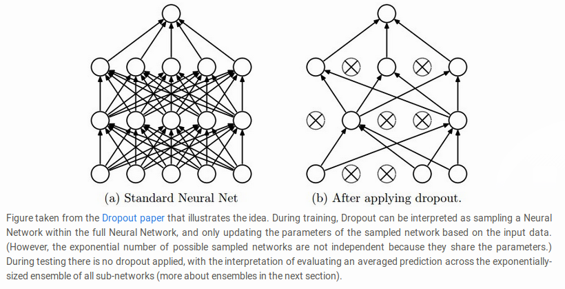 During prediction, not dropping, but perform a scaling of hidden layer outputs by p. Because at test time all neurons see all their inputs, so we want the outputs of neurons at test time to be identical to their expected outputs at training time. Performing this is like computing an ensemble prediction of many sub-networks.
- Its preferable to use inverted dropout, which performs the scaling at train time, leaving the forward pass at test time untouched. P=0.5 is a reasonable default.
1.7.4 Adding noise, transformations on the data
1.7.5 TODO vanishing or exploding gradient
1.7.6 moving average
During training, you use gradient descent to update the weights of the NN. This can be a noisy process, as sometimes the weights might move in the wrong direction (they move correctly for that particular sample, but incorrectly relating to overall performance). To limit this, you take a moving average of what the weights have been over a bunch of previous updates. This forgets old weights (when the network was poorly trained), but averages recent weights (to get rid of the noisyness).
1.7.7 TODO weight initialization
- Zero initialization: every neuron gets the same output, same gradient, same update. BAD.
- Small random numbers: Sampled from a multi-dimensional gaussian. We want to be close to zero, but not identically to zero. Symmetry breaking.
- Calibrate the variances with 1/sqrt(n). n is number of inputs to the neuron. To ensure all neurons in the network initially have approximately the same output distribution and empirically improves the rate of convergence.
- A recent paper derives an initialization specifically for ReLU neurons that the var for neurons should be 2.0/n. w = np.random.randn(n)*sqrt(2.0/n) and is the current recommendation for ReLU neurons
- Sparse initialization.
- Initializing biases: common to initialize to zero. For ReLU, some people use small constant values like 0.0.1 in practice current recommendation for ReLU w = np.random.randn(n)*sqrt(2/n)
- TODO Batch Normalization. Significantly more robust to bad initialization. Amounts to insert BatchNorm layer immediately after fully connected layers or conv layers, and before non-linearities.
- Xavier initialization: Helps signals reach deep into the network.
- If the ws start too small, then signal shrinks as it passes through each layer until it's too tiny to be useful.
- If ws start too large, signal grows until it's too massive to be useful.
- With each passing layer, we want the variance to remain the same. This helps us keep the signal from exploding to a high value or vanishing to zero. In other words, we need to initialize the weights in such a way that the variance remains the same for x and y.
Xavier makes sure ws are 'just right'.
- Drawing the ws from a dist with zero mean and a specific variance var(W) = 2/(nin + nout). nin is num of neurons feeding into it, and nout is the num of neurons the result is fed to. The dist is usually Gaussian or uniform. Preserves also the backpropagated signal
- In caffe Var(W) = 1/nin. Its easier to compute.
- If you look closer at the problem and ReLU activation function, you can realize that ReLU does not lead to vanishing or exploding gradients and generally, you may not use Xavier initialization with this activation function.
- A recent paper by He et al.[3] presents a pretty straightforward generalization of ReLU and Leaky ReLU. What is more interesting is their emphasis on the benefits of Xavier initialization even for ReLU. They re-did the derivations for ReLUs and discovered that the conditions were the same up to a factor 2.
But Xavier init is still good choice to init weights in your network.
1.7.8 Gradient Check
comparing analytic graident to the numerical gradient. If you are developing the optimizers.
- Use the centered formula
- Use double precision
- Use relative error for comparison: 1e-4 > relative error is usually okay. 1e-7 and less better.
1.7.9 Annealing the learning rate
- Step decay: Reduce learning rate by some factor every few epochs. The factor depends of the problem. Common heuristic: reduce the lr by a constant (e.g. 0.5) whenever the validation error stops improving.
- Exponential decay
- 1/t decay.
Step decay is preferable in practice. Err on the side of slower decay and train for a longer time.
1.7.10 Second order methods
- involves calculating inverse Hessian Matrix.
- impractical because requires too much memory.
- To approximate the inverse Hessian. L-BFGS.
- Not common. More standard is to use SGD variants based on (Nesterov's) momentum.
1.7.11 Hyperparameter optimization
- Implementation
have a worker that continuously samples random hyperparameters and performs the optimization. During the training, the worker will keep track of the validation performance after every epoch, and writes a model checkpoint (together with miscellaneous training statistics such as the loss over time) to a file.It is useful to include the validation performance directly in the filename, so that it is simple to inspect and sort the progress. Then there is a second program which we will call a master, which launches or kills workers across a computing cluster, and may additionally inspect the checkpoints written by workers and plot their training statistics, etc.
- Prefer one validation over cross-validation
In most cases a single validation set of respectable size substantially simplifies the code base, without the need for cross-validation with multiple folds.
- Hyperparameter ranges.
Search params on log scale. EX: learningrate = 10**uniform(-6,1). We generate random number from a uniform dist, but then raise it to the power of 10. The same for regularization strength. Learning rate and regularization strength have multiplicative effects on the training dynamics. LR multiplies the computed gradient in the update. Is much more natural to consider a range of lr multiplied or divided by some value. Some params (e.g. dropout) are instead usually search in the original scale.
- Prefer random search to grid search.
More efficient and easier to implement. 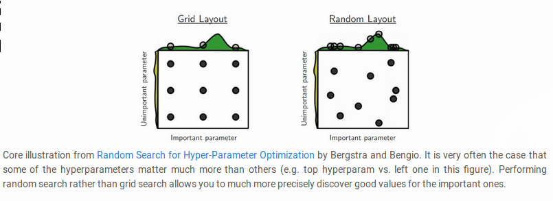
- Careful with best values on border.
You may be missing more optimal hyperparams setting beyong the search interval.
- Stage search from coarse to fine.
first search in coarse ranges, and depending on where the best results are turning up, narrow the range. Helpfull to perform initial coarse search with only 1 epoch or less. A narrower search with 5 epochs, and later a detailed search for many more epochs.
- Bayesian Hyperparameter Optimization
appropriately balance the exploration-explotation trade-off when querying the performance at different hyperparameter.
1.7.12 Ensembles
Train multiple independent models, and at test time avg their predictions. Take longer to evaluate.
1.7.13 TODO Residual Learning
1.8 Datasets
1.8.1 Mnist
1.8.2 not mnist
1.8.3 CIFAR-10
60000 32x32 images divided in 10 classess. 50000 training, 10000 testing
1.9 Case studies, state of the art
1.9.1 LeNet
First success in using convnets.
1.9.2 alexnet
winner of ImageNet challenge 2012. (top 5 error of 16%). Similar to LeNet, but deeper, bigger, and featured Conv Layers stacked on top of each other.
1.9.3 ZF NET
winner of ImageNet 2013. Improvements of AlexNet by tweaking hyperparams, expanding size of the middle conv layers and making stride and filter size on first layer smaller.
1.9.4 GoogLeNet
Winner of ImageNet 2014. Development of Inception Module, reduced the num of params in the net (4M, compared to AlexNet 60M). Uses avg pooling instead of fc layers at the top of the ConvNet, eliminating params that dont matter much. Inception-v4 is the most recent following version.
1.9.5 VGGNet
Pushing the depth of conv networks to 16-19 improves accuracy. Uses 3x3 size filters. runner-up in Imagenet challenge 2014. their pretrained model is available for plug and play use in Caffe. Uses more memory and params. Most of the params are in the fst fc layer. Later was found that these fc layers can be removed with no performance downgrade.
1.9.6 ResNet
Residual Network. Winner 2015. Features special skip connections and heavy use of batch normalization. Also no fc layers at the end. By far state of the art model and default choice for using ConvNets in practice (as of May 10,2016).
Why do very deep nets perform worse as you keep adding layers? The authors The authors of ResNet boiled these problems down to a single hypothesis: direct mappings are hard to learn. And they proposed a fix: instead of trying to learn an underlying mapping from x to H(x), learn the difference between the two, or the “residual.” Then, to calculate H(x), we can just add the residual to the input.
Say the residual is F(x)=H(x)-x. Now, instead of trying to learn H(x) directly, our nets are trying to learn F(x)+x.
Each “block” in ResNet consists of a series of layers and a “shortcut” connection adding the input of the block to its output. The “add” operation is performed element-wise, and if the input and output are of different sizes, zero-padding or projections (via 1x1 convolutions) can be used to create matching dimensions.
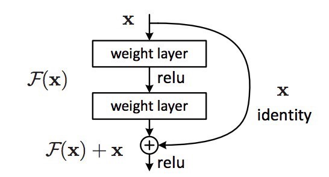
Because the gradient signal in ResNets could travel back directly to early layers via shortcut connections, we could suddenly build 50-layer, 101-layer, 152-layer, and even (apparently) 1000+ layer nets that still performed well. At the time, this was a huge leap forward from the previous state-of-the-art
1.9.7 Inception
How can we scale up neural nets without increasing computational cost? Using new building block for deep nets, known as "Inception module". This module is the product of 2 key insights.
In a traditional conv net, each layer extracts information from previous layer to transform the input data into a more useful representation. Each layer type extracts a different kind of information. The output of a 5x5 conv kernel tells something different of the output of 3x3 conv kernel, which is different from the output of a max-pooling kernel, and so on. At any given layer, how do we know what transformation provides the most “useful” information?
- Insight #1 let model choose
An Inception module computes multiple different transformations over the same input map in parallel, concatenating their results into a single output. In other words, for each layer, Inception does a 5x5 convolutional transformation, and a 3x3, and a max-pool. And the next layer of the model gets to decide if (and how) to use each piece of information.
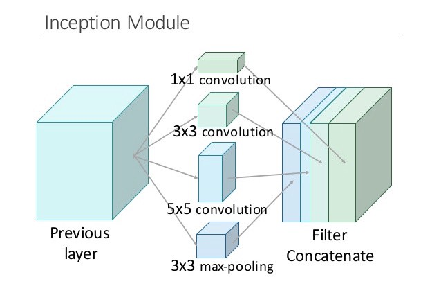
The increased information density of this model architecture comes with one glaring problem: we’ve drastically increased computational costs. Not only are large (e.g. 5x5) convolutional filters inherently expensive to compute, stacking multiple different filters side by side greatly increases the number of feature maps per layer.
- Insight #2
using 1x1 convolutions to perform dimensionality reduction. In order to solve the computational bottleneck, the authors of Inception used 1x1 convolutions to “filter” the depth of the outputs. A 1x1 convolution only looks at one value at a time, but across multiple channels, it can extract spatial information and compress it down to a lower dimension. For example, using 20 1x1 filters, an input of size 64x64x100 (with 100 feature maps) can be compressed down to 64x64x20. By reducing the number of input maps, the authors of Inception were able to stack different layer transformations in parallel, resulting in nets that were simultaneously deep (many layers) and “wide” (many parallel operations).
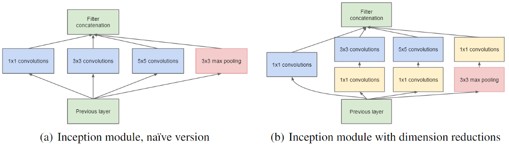
The first version of Inception, dubbed “GoogLeNet,” was the 22-layer winner of the ILSVRC 2014 competition I mentioned earlier. Inception v2 and v3 were developed in a second paper a year later, and improved on the original in several ways — most notably by refactoring larger convolutions into consecutive smaller ones that were easier to learn. In v3, for example, the 5x5 convolution was replaced with 2 consecutive 3x3 convolutions.
1.9.8 TODO Capsule networks (CAPSNETS)
Aim to remedy weakness of todays machine learning systems: not good at generalizing what it learns to new scenarios, like that an object is the same when seen from a new viewpoint. Build a little more knowledge of the world into computer-vision software Capsules: small groups of crude virtual neurons, are designed to track different parts of an object, and thir relative positions in space. A network of many capsules can use that awareness to understand when a new scene is in fact a different view of something it has seen before. Still slow compared to existing image-recognition software. Departs from the trend that humans should encode as little knowledge as possible into AI software, making them figure things out from scratch.
- It's important to understand what capsules try to solve before you delve into the details. If you look at Hinton's papers and talks, capsule is really an idea which improve upon Convnet. Hinton has two major complaints.
- First, the general settings of Convnet assumes that one filter is being used across different locations. This is also known as "location invariance". In this setting, the exact location of a feature doesn't matter. That has a lot to do with robust feature parameter estimation. It also drastically simplify backprop with weight sharing.
- But then location invariance also removes one important information of an image: the apparent location.
-Second assumption is max pooling. As you know, pooling usually removes a high percentage of information from the previous layer. In early architectures, usually pooling is the key to shrink the size of a representation down. Of course, later architectures had changed. But pooling is still an important component. -So the design of capsule has a lot of do to tackle problems of max pooling: Instead of losing information, can we "route" pixel values from previous layer correctly so that they are in optimal use?
1.9.9 Xception
"Extreme inception" Here’s the hypothesis: “cross-channel correlations and spatial correlations are sufficiently decoupled that it is preferable not to map them jointly.” is there any reason we need to consider both the image region and the channels at the same time?
In Inception, we began separating the two slightly. We used 1x1 convolutions to project the original input into several separate, smaller input spaces, and from each of those input spaces we used a different type of filter to transform those smaller 3D blocks of data. Xception takes this one step further. Instead of partitioning input data into several compressed chunks, it maps the spatial correlations for each output channel separately, and then performs a 1x1 depthwise convolution to capture cross-channel correlation.
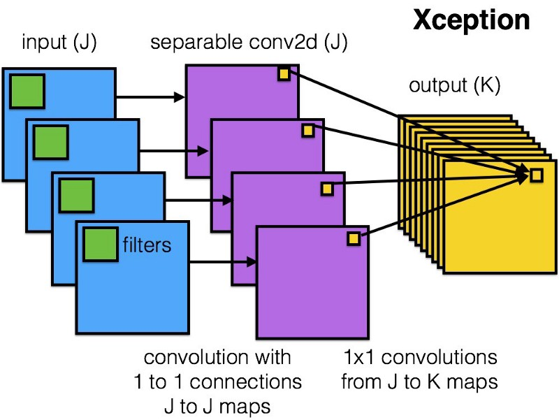
The author notes that this is essentially equivalent to an existing operation known as a “depthwise separable convolution,” which consists of a depthwise convolution (a spatial convolution performed independently for each channel) followed by a pointwise convolution (a 1x1 convolution across channels). We can think of this as looking for correlations across a 2D space first, followed by looking for correlations across a 1D space. Intuitively, this 2D + 1D mapping is easier to learn than a full 3D mapping.
And it works! Xception slightly outperforms Inception v3 on the ImageNet dataset, and vastly outperforms it on a larger image classification dataset with 17,000 classes. Most importantly, it has the same number of model parameters as Inception, implying a greater computational efficiency. Xception is much newer (it came out in April 2017), but as mentioned above, its architecture is already powering Google’s mobile vision applications through MobileNet.
1.9.10 TODO Mobilenet
1.10 Frameworks, libraries
1.10.1 TODO tensorflow
1.10.2 TODO tflearn
1.10.3 TODO keras
1.10.4 TODO caffe
1.10.5 TODO torch
1.10.6 TODO pytorch
1.11 Recommendations
1.11.1 Before learning
1.11.2 Monitoring
Plots to get intuition about different hyperparameter settings and how they should be changed for more efficient learning. X-axis should be in units of epochs. (One epoch means that every example has been seen once).
- Loss function
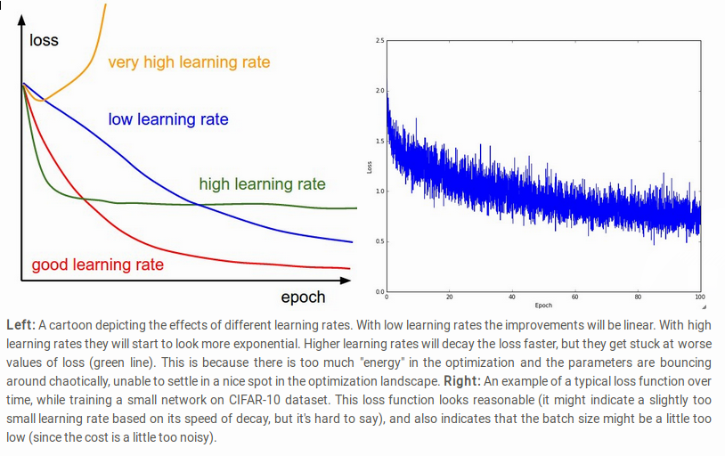
The amount of "wiggle" is related to the batch size. Some people prefer to plot the loss in the log domain. If multiple cross-validated models are plotted on the same loss graph, the differences between them become more apparent.
- Train/Val accuracy
Gives you insights into the amount of overfitting. 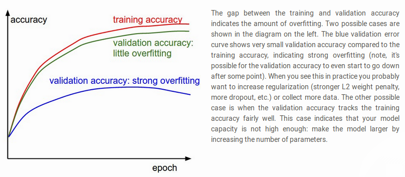
- Ratio of weights updates
ratio of the updates magnitudes to the value magnitudes, for every set of params independently. Heuristic: somewhere around 1e-3. Lower, then learning rate is too low. Higher, then learning rate is likely too high.
- Activation/Gradient distributions per layer.
plot activation/gradient histograms for all layers of the net, and see if there are strange distributions(outputting zero, neurons saturated).
- First-layer visualizations
when working with images, plot the first-layer features visually.
1.11.3 Trainining
- Optimizer: Adam, or SGD with Nesterov momentum
- Decay lr: Halve the lr after fixed number of epochs, or whenever the validation accuracy tops off.
- Search good hyperparams with random search.
- Form ensembles for extra performance.
- Monitoring
1.11.4 Computational Considerations
largest bottleneck: memory.
- From intermediate volume sizes: the raw number of activations at every layer of ConvNet, and their gradients (of equal size). Most activations are in earlier layers. Kept around cuz needed for backpropagation. An implementation that runs a ConvNet only at test time could reduce this by a huge amount, only storing the current activations at any layer and discarding the prev activations on layers below
- From param sizes. gradients, and step cache if using momentum, adagrad or rmsprop. The memory to store the para vector alone must usually be multiplied by a factor of at least 3.
- miscellaneous memory, such as image data batches, augmented versions, etc.
The number should be converted to GB. Take the num of values, multiply by 4 to get number of bytes (every floating point is 4 bytes, 8 for double precision), and then keep dividing by 1024 to get GB. A common heuristic to "make it fit" is to decrease the batch size, since most of the memory is usually consumed by the activations.